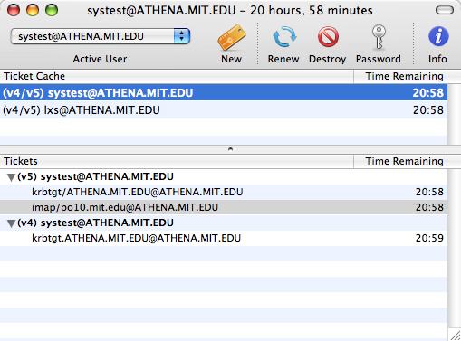

This web page has instructions for the Kerberos
application for Mac OS X.
These instructions reflect the Kerberos application on Mac OS X 10.3. While
the Kerberos application is similar on previous OS X releases, not all features
described below may be available or located in the same place.
|
|
If you're not familiar with Kerberos authentication and terms such as
Kerberos tickets, go to What Is Kerberos? to learn the concepts and terms.
|
|
|
|
|
Opening the Kerberos application
|
|
To open the Kerberos application:
If you have installed the Mac
OS X Kerberos Extras, go to the Applications folder,
open the Utilities folder, and open the Kerberos
icon.
Otherwise, you will need to navigate to the /System/Library/CoreServices
directory (use the Go To Folder... item in the Finder's
Go menu), and open the Kerberos icon
from there. (You may want to run the Kerberos Extras or make your own
alias in a more convenient location.)
Result: The Kerberos application window is displayed.

|
|
|
|
|
Obtaining Kerberos tickets
|
|
- Click on the Get Tickets button, choose Get
Tickets from Tickets menu, or press <command>-N.
Result: The Kerberos Login dialog box appears:

The first time you use the Kerberos application to log in, the username
box is blank. After that, by default the Kerberos Login dialog box
displays the username of the person who last used it to log in.
- Type your Kerberos username in the username box. (This is not necessarily
the same as your Mac OS X username.)
If you want to log in using a principal that contains an instance
(if you are unfamiliar with this term, don't worry about it), enter
a slash after your username and then type the instance, e.g. "username/instance".
(This is the v5 style of specifying instances.)
- Click once in the password box, or press the <tab>
key, and type your password.
- If you need to change realms, click once in the Realm field/popup
list and choose the desired realm. If the desired realm is not present
in the list, you can try typing it into the Realm field. This will only
work if you have a Kerberos configuration file (edu.mit.Kerberos) that
already includes the realm, or your site is set up for auto/DNS resolution
of Kerberos realms. If neither of these are true, you should consult
your system administrator for a proper Kerberos configuration file.
You can see what realms are in the configuration file by using the Edit
Favorite Realms feature of the Kerberos application.
- Click on OK.
Result: If authentication is successful, a ticket entry
appears in the Kerberos application window:

The Active User box indicates your Kerberos username, the realm for
which your Kerberos tickets are valid, and the time remaining for
which they are valid. An entry also appears in the ticket list.
By default, Kerberos tickets are valid for 10 hours. You can shorten
the duration for which tickets are valid at the time you log in. Refer
to Specifying ticket lifetime when logging in
for instructions on how to do this. You can also change the default
ticket lifetime. Refer to Changing Preferences
to find out how to do this.
If you get a Kerberos error, it may be for any of the following reasons:
- You've entered either your Kerberos username or password incorrectly.
Try again, making sure that the CAPS LOCK key is not turned on.
- You may not have authorization to log into the realm specified.
If you're authorized to log into a different realm, refer to Adding
and removing realms to make another realm available, and then
choose it from the realms popup list when logging in.
- The realm you specified does not have an entry in your configuration
file and/or your site does not have auto/DNS configuration for that realm.
Contact your site administrator.
- There is a problem with your authorization for the realm you're
using. Contact your site administrator.
To see details about your tickets, click once on the triangle next
to the username in the ticket list. See About
the ticket list for more information.
The Kerberos application allows more than one Kerberos user to log
into the same Macintosh (note this is not the same as having two Mac
OS X users logged in at the same time). An additional person can log
in by completing steps 1 - 4.
Each additional person who has logged in receives an entry in the
ticket list:

The active Kerberos user, i.e., the username whose tickets are used
for authentication when you start a new Kerberos-using application,
appears in the Active User box. This username is also underlined in
the ticket list.
To change active users, follow the procedure in the next section,
Changing active users.
If you log out of Mac OS X, all tickets for all Kerberos users will
be destroyed.
Once the duration of your tickets has ended, an "expired" message
appears:

Specifying ticket lifetime when logging in
If you want to change the length of time that your tickets are valid
upon logging in, you can do it through the Kerberos Login dialog box.
To do this,
- Click on the Get Tickets button, choose Get
Tickets from Tickets menu, or press <command>-N.
Result: The Kerberos Login dialog box appears.
- Click once on the Show Options button.
Result: The Kerberos Login dialog expands, revealing
the login options:

- Place the mouse pointer on the Ticket Lifetime slider and drag
it to the desired time indicated above the slider.
- If you want, you can click on the Hide Options
button to hide the login options, or you can just leave them always
displayed (the Kerberos Login dialog will remember whether it was
expanded or not the next time it's displayed).
- Enter your Kerberos username (if it's not already displayed) and
password, then click on OK.
Result:If your login is successful, you've obtained
tickets that are valid for the lifetime you specified.
The next time you log in, the lifetime of the tickets you obtain
will be the same as the time you specified during the previous login,
unless you repeat this procedure or force a constant default lifetime
(see Changing preferences for instructions on
how to do this).
- You can change other Kerberos Login options here. See Changing
preferences for more information about each option.
|
|
|
|
Below the Active User box and the Renew Tickets, Destroy Tickets, and
Change Password buttons is the ticket list. The ticket list shows
all the principals that are currently authenticated in the current Mac
OS X user's session.
Each principal has a set of Kerberos tickets belonging to it. When you
log in with Kerberos, you get a ticket-granting ticket which then
allows you to get other tickets from other applications (also called services).
Then for each application you run that requires Kerberos authentication,
you get a service ticket.
By default, the principals and their tickets appear as a summary line
in the ticket list. The summary lines are in bold text. Each summary line has three elements:
- The Kerberos versions supported by the realm the principal is authenticated
in. This appears as "(v4/v5)", "(v4)", or "(v5)"
before the principal. When you log in using Kerberos for Macintosh,
it will attempt to get both Kerberos v4 and v5 tickets for your principal.
However, not all Kerberos-using sites support both versions (v4 is becoming
less common), or different realms at the same site may also support
different versions, so you may see only one version listed.
- The username of the authenticated principal.
- The minimum remaining lifetime for the ticket-granting tickets belonging
to the principal (displayed as hours:minutes). You receive one ticket-granting
ticket for each Kerberos version the realm supports; these may have
different expiration times (although Kerberos for Macintosh attempts
to make them the same).
Instead of a time, you may see either "expired" or "not valid" in the Time
Remaining column. "Expired" means that your tickets have no time remaining and
so are no longer valid; "not valid" means they are no longer valid for some
other reason, usually because your Mac's IP address has changed since you obtained
the tickets. In either case, you need to renew your tickets (although Kerberos for
Macintosh will also prompt you automatically to renew if you try to use a service
requiring Kerberos tickets).
If you want to see details of tickets associated with each principal,
click on the triangle at the left of the principal's summary line. The
list will expand:

In the expanded list, you will see a list of the tickets (credentials)
belonging to that principal. If the principal is authenticated for both
versions of Kerberos, the tickets are grouped by version underneath a
subheading for each version (see picture above).
If you always want the ticket list to display expanded entries, you can
set the "Always expand new ticket list entries" preference.
See the Changing preferences section.
You can display even more detailed information about each ticket using
the Ticket Info window. See the Displaying ticket
information section.
|
|
|
|
|
The current, active user specifies which Kerberos username will be used for authentication
when you work with an application that requires Kerberos authentication.
If more than one Kerberos user is logged in, you may want to change the active
user before using such an application.
Use one of the following techniques to change the active user:
- Click once on the boldfaced username line in the list that you want
to be the active user, then click on the Make User Active
button.
- Double-click on the boldfaced username line in the Tickets list.
- From the Tickets menu, choose Change Active
User > username where username is the
user you want to make active.
- Control-click on the Kerberos application's icon in the dock to display
the Kerberos dock menu, and choose the username you want to make active
from it.
Result: The new active user is displayed in the Active User
box and also appears underlined in the ticket list.

|
|
|
|
|
To destroy tickets, select the boldfaced username line in the ticket
list then click on the Destroy Tickets button, or choose
Destroy Tickets from the Tickets menu.
Result: The ticket entry is removed from the ticket list. If other
Kerberos users are logged in, their usernames remain in the ticket list
and their tickets are valid for the remaining time indicated.
|
|
|
|
|
If your tickets have expired, or you want to extend the lifetime of existing
tickets, you may want to renew your tickets.
As of Mac OS X 10.3, Kerberos for Macintosh supports the "renewable"
property for tickets. If your site allows tickets to have this property,
you can renew tickets up for a set amount of time without re-entering
your password, as long as your current tickets are still valid (that is,
haven't expired). By default, Kerberos for Macintosh tries to get tickets
with the "renewable" property; you can change this in the Kerberos
Login dialog options or in the Kerberos application preferences.
In fact, by default, the Kerberos application will automatically attempt
to renew your tickets if you leave it running (you can close the main
window for convenience). Once half your ticket's lifetime has expired,
if it has the "renewable" property, the Kerberos application
will automatically issue a renew request for it. It will keep doing this
up until the renewable time limit. You can control this behavior by checking
or unchecking the "Auto-renew renewable tickets" checkbox in
the Kerberos application preferences.
You can see if a ticket is renewable, and for how long, by using the
ticket information window. See Displaying ticket
information below.
If your tickets are expired, or you choose not to use the auto-renew
feature and want to renew your tickets before they expire, or your tickets
do not support the "renewable" property, use the Renew
Tickets command.
- Click once on your boldfaced username line in the ticket list to select
it.
Result: The Renew Tickets button is activated.

- Click on the Renew Tickets button, choose Renew
Tickets from the Tickets menu, or press <command>-R.
Result: Either your tickets are renewed to their full lifetime
(if your ticket had the "renewable" property and were not
expired), or the Kerberos Login dialog box is displayed (if your tickets
didn't have the "renewable" property or they were expired).
- If the Kerberos dialog was displayed, enter your password.
- If you want to change the lifetime of the tickets you're obtaining,
see Specifying ticket lifetime when logging in
for instructions.
- Click on OK.
Result: The tickets' lifetime is extended either to the
lifetime you specified when logging in or to the maximum duration
set under Preferences... (the default is 10 hours).
To change the default tickets' lifetime, see Changing
Preferences. If you are very close to the maximum renewable lifetime,
your tickets will only be good for the time remaining until the end
of the renewable lifetime, which may be shorter than your requested
lifetime.
|
|
|
|
|
Displaying ticket information
|
|
If you are interested in more information about your Kerberos tickets,
the Kerberos application can display detailed information about each ticket
by using the Get Ticket Info command. To display detailed
ticket information:
- Select a ticket entry in the ticket list of the Kerberos application's
ticket list. (Note that you can only get info about individual ticket
items - the non-bold lines. You may have to twiddle down the arrow next
to the main entry to see the individual ticket items.)
- Either double-click on the entry, or from the Tickets
menu, choose Get Ticket Information, or press <command>-I.
Result: The Ticket Info window appears:

At the top of the ticket info window is the principal who owns the
ticket, the service that the ticket was obtained for, and the Kerberos
version of the ticket. The rest of the information is divided into several
panes for easier reading:
- Times - The exact time the ticket was issued, the
start and end time that the ticket is valid for, and when the ticket
is renewable until (if applicable), all in local time. Also a status
field to tell you if the ticket is valid, expired, or not valid for
another reason.
- Flags (for v5 tickets only) - The properties, such
as forwardable and renewable, of the ticket.
- IP Addresses - The IP addresses for which the ticket
is valid. v5 tickets may be valid for multiple or no addresses, so
you may see more than one or none listed, although typically you will
only see none or one listed. v4 tickets can have no more and no less
than one address, so you will only see one listed.
- Encryption - For v5 tickets, lists both the session
key and service principal key encryption types of the ticket. For
v4 tickets, lists the string to key type of the ticket
- When you are done looking at the ticket information, you can close
the Ticket Info window using its close box.
You can have more than one ticket info window open at once.
|
|
|
|
|
You can change your Kerberos password by using the Change Password...
command.
To change your password,
- Click on the boldfaced username line in the ticket list to select
it.
Result: The Change Password... button is
activated:
- Click on the Change Password... button or choose
Change Password... from the Tickets
menu.
Result: The Kerberos Change Password dialog box appears
with the name of the user selected previously at the top:

- Enter the password you're using now in the "Enter your old password"
box.
- Click once in the "Enter your new password" box, or press the <tab>
key, and type the new password.
- Click once in the "Enter your new password again" box, or press the
<tab> key, and type the new password a second
time, exactly as you typed in the previous step.
- Click on OK.
Result: Either you will receive a confirmation that your
password has been changed, if you entered either
your old password incorrectly or the entries for the new password
don't match exactly, you'll get an error. You may also receive an error
from the Kerberos server if you try to choose an insecure password.
This password stays in effect until you change it again using either
the Kerberos application or the equivalent procedure on another
Kerberos client on another platform.
|
|
|
|
|
The Kerberos application's dock icon has several features to help you quickly
determine the status of the active user's tickets and to manage your Kerberos
tickets.
Graphical ticket status & time remaining indicator
In the dock icon, the color of the key in the dock icon changes to indicate the status of the
active user's tickets. Below the key is a display of the time remaining in the active user's
tickets in the form hours:minutes (the time remaining display can be turned off in the
Preferences dialog or in the Kerberos dock menu). The possible states are:
 |
Gold key: The active user has valid tickets. |
 |
Red key: The active user's tickets are near expiration (less than 5 minutes lifetime remain). |
 |
Black key: The active user's tickets have expired,
or no tickets are in the cache. Time remaining is shown as "--:--"
. |
 |
Indented key: The Kerberos application is not running. |
You can close the ticket list window without quitting the Kerberos
application, so that you can still have the dock icon showing without
cluttering your screen with a window you don't always need open.
Kerberos Dock Menu
If you control-click (or click and hold down for a few seconds) on the Kerberos application's dock icon
while the application is running, the Kerberos dock menu will appear:

(If the only option you see in the Kerberos Dock Menu is "Show in Finder", the Kerberos application is
not running.)
The Dock Menu items perform the following functions:
Kerberos - Brings the ticket list window to the front. (If the ticket list window is closed, this
option will not be listed.) Other windows, such as any open ticket information windows, will also be listed
and can be brought to the front by choosing them.
Display time remaining in icon - Turns on/off the display of time remaining of the active user's tickets
in the dock icon (default is on).
Get Tickets... - Displays the Kerberos Login dialog, allowing you
to get tickets for a new user (or new tickets for an existing user).
Destroy Tickets - Destroys the active user's tickets (the active user is indicated by
a checkmark next to the user's principal in the user list). If no users are authenticated,
this option will be disabled.
Renew Tickets... - Renews the active user's tickets (the active
user is indicated by a checkmark next to the user's principal in the
user list). If the tickets do not have the renewable property, will
display the Kerberos Login dialog, otherwise, renewal will happen
automatically. If no users are authenticated, this option will be
disabled.
Active users (variable text) - These are the principals of the currently
authenticated users. The active user is marked with a checkmark. You can change
the active user by choosing another principal from the menu.
Keep In Dock - Retains the Kerberos application icon in the dock, even
when the application is not running, for easy access.
Show In Finder - Opens the folder containing the Kerberos
application in the Finder.
Hide - Hides, but does not quit, the Kerberos application.
Quit - Quits the Kerberos application.
|
|
|
|
|
Adding and removing realms
|
|
A default Kerberos realm is specified by the edu.mit.Kerberos configuration
file (as distributed from MIT, this realm is ATHENA.MIT.EDU). When using
the Kerberos application to log in, by default the Kerberos username and
password entered are checked for authorization in this area of the network.
You can add other realms, as described in this section, and change which
one Kerberos Login uses by default. (For instructions on how to change
the default realm, see Changing Preferences.)
Other realms listed in the edu.mit.Kerberos configuration file can also
be used for logging in, but must first be added to the list of "favorite"
realms which are displayed in the Kerberos Login dialog. You can do this
one of two ways.
First, you can type the realm you want directly into the Realm field/popup
in the Kerberos Login dialog. This will only work if the realm is already
in your Kerberos configuration file, or if your site is set up for auto/DNS
resolution of Kerberos realms. If you are unsure if either of these are
the case, or you try to add a realm this way and it doesn't work, consult
your site administrator.
Second, you can use the Edit Favorite Realms of the
Kerberos application that provides the following options for making the
other realms in the preferences available for use:
- You can add one or multiple realms from the edu.mit.Kerberos preferences
file to the Favorite Realms List.
- If you want to keep the list of Favorite realms to the minimum that
you need, you can remove realms from the Favorite Realms List.
- You can type in the name of a realm to be used directly. This should
only be used for auto configuration/DNS realms; typing in the name of
a realm that is not in the configuration file and does not have a auto/DNS
configuration at your site will not work, as simply giving the name
of a realm does not provide all the necessary information for that realm
to be used by Kerberos for Macintosh. If you do not see a realm you
want here and are unsure if there is a auto/DNS configuration for it,
consult your site administrator.
For information on adding new realm information to the Kerberos preferences
file, see the Kerberos
Preferences on Mac OS X Documentation. Kerberos for Macintosh does
not provide a GUI way to add this information. Generally you should not
have to do this, consult with your site administrator first!
To add and remove realms,
- From the Edit menu, choose Edit Favorite
Realms... or press <command>-E.
Result: The Edit Favorite Realms dialog box appears:

- Do any of the following:
- Click once on the realm that you want to add in the All Available
Realms side of the dialog box, then click on Add
to add the selected realm to the Favorite Realms list.
Result: The selected realm is moved to the Favorite
Realms list:

- Click on Add All to add all of the realms from
the All Available Realms list to the Favorite Realms list.
Result:The remaining realms in the All Available Realms
list are moved to the Favorite Realms list:

- Click once on the realm that you want to remove in the Favorite
Realms dialog box, then, click on Remove to remove
the selected realm from the Favorite Realms list.
Result: The selected realm is removed from the Favorite
Realms list:

NOTE: At least one realm is required in the Favorite Realms list.
- Type the name of a realm with auto/DNS configuration into the
"Add realm that has auto configuration" field, and click
on the Add button to the right of that field.
- You can also rearrange the order of realms in the list by dragging
them around in the Favorite Realms list.
- When you have finished adding and/or removing realms, click on Done.
Result:If you've added one or more realms, they are now
available from the Kerberos Login dialog box. If you've removed any
realms, they are no longer available for use unless you add them again
later on.
To find out how to change the default realm, refer to Changing
preferences.
|
|
|
|
You can make certain customizations to the Kerberos application
by using the Preferences... command. These customizations
also affect the Kerberos Login dialog anytime another application brings
it up.
- From the Kerberos (application) menu, choose Preferences...
Result:The Preferences dialog box appears (see illustrations
below).
- The Kerberos preferences are divided into several groups, with a tab
for each group. Click on the tab for the preferences you want to modify:
- Ticket Defaults - preferences that control the
default ticket options for the Kerberos Login dialog
- Username Defaults - preferences that control
the default username and realm options for the Kerberos Login dialog
- Time Ranges - preferences that control the minimum,
maximum, and default settings of the ticket lifetime and renewable
lifetime sliders in the Kerberos Login dialog
- Behavior - preferences that control the way the
Kerberos application displays information and other behaviors
- Make changes to any of the following:

- Ticket Defaults:
- Remember ticket options from last Kerberos login/Use
these ticket options (default = "Remember ticket
options from last login"): This popup menu lets you chose
whether to retain the ticket properies and lifetime options
in the Kerberos Login dialog box after each time you log in,
or to always use the options specified in the Preferences dialog
each time. NOTE: Changes you make to these options only take
effect the next time you obtain tickets. Any tickets that you
currently have maintain the options and lifetimes that were
set when you obtained them.
- Ticket lifetime always (default=10 hours)
(only applies if "Use these ticket options" is
selected): To change the duration for which tickets will
be valid, place the mouse pointer on the Ticket Lifetime
slider and drag it to desired time indicated above the slider.
- Always get forwardable tickets (default=on)
(only applies if "Use these ticket options" is
selected): Tickets that you've obtained on your machine
are valid on another machine to which you are connecting.
(We recommend that you leave this option turned on.) Only
applies to Kerberos v5 tickets.
- Always get addressless tickets (NAT mode)
(default=on) (only applies if "Use these ticket options"
is selected): Request tickets that will not contain any
IP addresses. This feature is required to use many Kerberos
v5 services behind a NAT. Only applies to Kerberos v5 tickets.
- Always get proxiable tickets (default=on)
(only applies if "Use these ticket options" is
selected): Request tickets that are proxiable. Proxiable
tickets are used by some Windows 2000 Kerberos services.
Note that unlike the other options, you cannot enable or
disable this option in the login dialog itself. You can
only modify it here. Only applies to Kerberos v5 tickets.
- Always get tickets renewable for (default
= on) (only applies if "Use these ticket options"
is selected): Request tickets with the "renewable"
property, so that they can be renewed without re-entering
your password as long as your existing tickets are valid.
Tickets can be renewed in this way for the length of time
specified by the slider (which defaults to 7 days). Your
site may not allow you to get tickets with the renewable
property, or may not allow them to be renewable for as long
as you request.

- Username Defaults:
- Remember principal from last Kerberos login/Use this principal
information (default = "Remember principal from last
login"): This popup menu lets you chose whether to retain the
username, instance, and realm in the Kerberos Login dialog box after
each time you log in, or to always use the options specified in
the Preferences dialog each time.
- Always use blank username (default) (only
applies if "Use this principal information" is selected):
The username field will always be blank in the Kerberos Login
dialog.
- Always use this username (only applies if
"Use this principal information" is selected): The
username field of the Kerberos dialog will always be the specified
username. You can enter a username and instance pair here, it
should be in v5 style (e.g. "username/principal").
You can edit the username field to be something different for
a single login, but it will always return to this username on
next login.
- Always use this realm (only applies if "Use
this principal information" is selected): The realm selected
from this popup will always appear as the selected realm in
the Kerberos Login dialog's realm popup. If the realm you want
is not in the popup list, use the Edit
Favorite Realms to add realms, then return to the
Preferences dialog and choose the desired from the Realm popup
list.

- Time Ranges:
- Using the edit fields in this preferences panel, you can set
the minimum and maximum range of the ticket lifetime and renewable
lifetime sliders displayed by the Kerberos Login dialog. These
settings only control the minimum and maximum lifetimes your Macintosh
requests from the Kerberos server; the Kerberos server may not
allow tickets longer or shorter than certain lifetimes, or not
allow tickets longer or shorter than certain renewable lifetimes.
Defaults are 10 minutes minimum ticket lifetime, 10 hours maximum
ticket lifetime, 10 minutes miniumt renewable lifetime, 7 days
maximum renewable lifetime.

- Behavior:
- Auto-renew renewable tickets (default=on):
When this option is checked, Kerberos.app will automatically renew
any tickets that have the "renewable" property once
they reach half or less of their valid lifetime. You must leave
the Kerberos application running for this option to be useful.
- Display time remaining in dock icon (default=on):
When this option is checked, the time remaining in the active
user's tickets will be displayed in the Kerberos application's
dock icon.
- Always expand new ticket list entries (default=off):
When this option is checked, the full list of your individual
tickets displayed in the ticket list by default (as opposed to
a summary of your tickets indicated by your username). See About
the ticket list for more details.
- After the Kerberos application is launched
(window options) (default="Always open ticket list window"): This
option controls whether the Kerberos application displays the
ticket list window when the application is launched. You may not
want the window displayed if you primarily use the dock icon and
menu.
- Always open ticket list window: The ticket
list window will always be displayed when the Kerberos application
is launched, regardless of its state when the application
was last quit.
- Never open ticket list window: The ticket
list window will never be displayed when the Kerberos application
is launched, regardless of its state when the application
was last quit.
- Remember if the ticket list window was last open:
The ticket list window will be displayed when the Kerberos
application is launched if it was open when the Kerberos application
was last quit, and not displayed if it was closed when the
application was last quit.
- Click on OK to save the changes you've made.
|
|
|